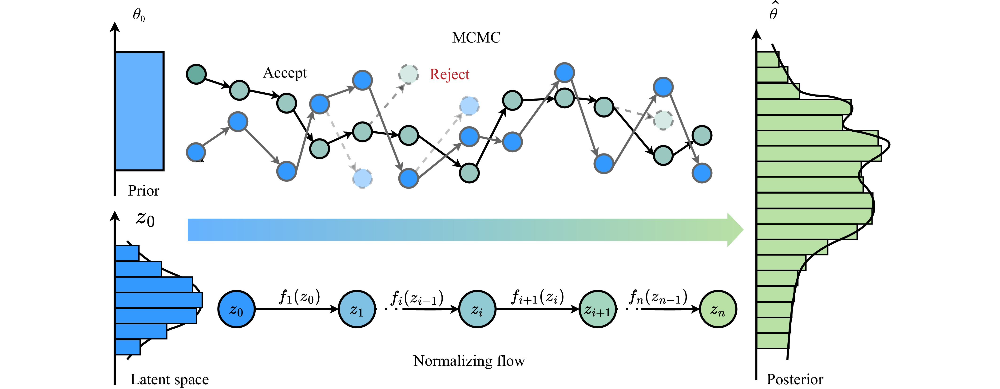
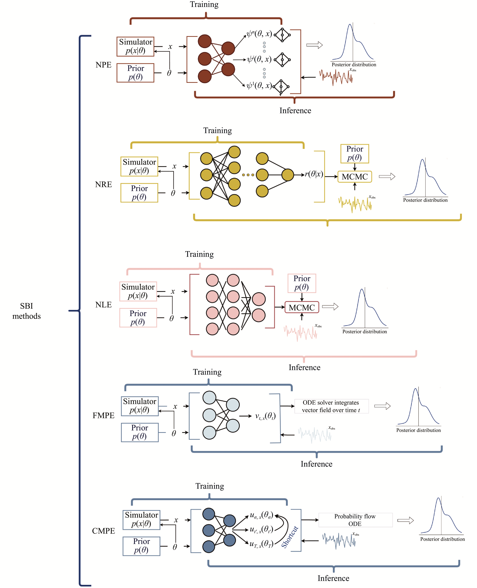
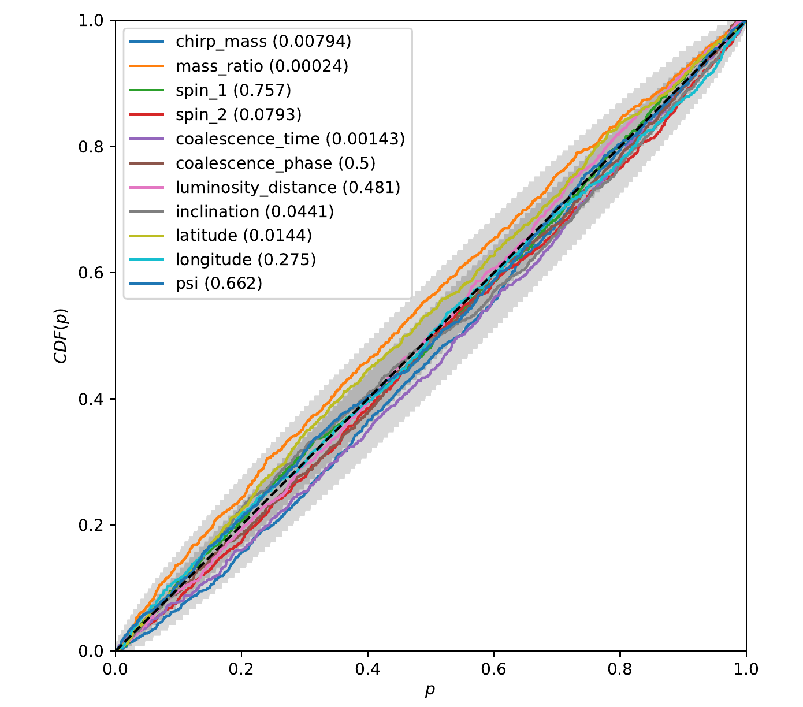

Chapter 6
生成模型与模拟推断
引力波参数估计的核心任务是从探测器输出 \(d\) 中推断引力波源的物理参数 \(\theta \)（质量、自旋、距离、天空位置等）的后验分布 \(p(\theta |d)\)。贝叶斯定理给出了形式上完整的答案：
其中 \(p(d|\theta )\) 为似然函数，\(p(\theta )\) 为先验，\(p(d) = \int p(d|\theta )p(\theta )\,\mathrm {d}\theta \) 为证据。然而，这一形式解在实践中面临严峻的计算挑战：似然函数的每次评估需要生成理论波形并与探测器噪声模型卷积，计算代价不低；而对高维参数空间的完整采样，使用马尔可夫链蒙特卡洛（MCMC）或嵌套采样方法，对大质量双黑洞系统需要数十小时，对极端质量比旋入系统则可能延伸至数月。
模拟推断（Simulation-Based Inference，SBI）提供了一条根本不同的路径：用神经网络直接近似后验分布、似然函数或似然比，将推断时间从小时/天级压缩至秒级，同时通过覆盖率检验、P-P 图和与传统采样器交叉验证来约束近似误差。本章系统介绍 SBI 的理论框架、主要方法变体，以及在引力波参数估计中的具体应用，重点展示作者参与和合作完成的相关系统性研究。
图 6.1 给出了传统 MCMC 采样与归一化流后验近似之间的基本差异。Metropolis–Hastings 型 MCMC 从初始参数点出发，通过“提出候选–接受/拒绝–更新链”的迭代过程逐步逼近后验分布；其可靠性来自渐近采样理论，但计算代价随似然评估次数线性累积。归一化流则从标准正态潜变量 \(z_0\sim \mathcal {N}(0,1)\) 出发，通过一系列可逆映射将简单分布变换为目标后验分布；训练完成后，生成后验样本主要是神经网络前向传播，因而更适合低延迟、大批量参数估计。二者并非简单替代关系：MCMC 仍是精密验证和基准分析的重要工具，而流模型代表了将采样代价转移到离线训练阶段的学习型近似路线 [94]。

从信息论的视角，SBI 与传统 MCMC 方法代表了两种不同的推断哲学：MCMC 是“计算型推断”（computational inference），通过随机采样逐步积累关于后验分布的信息，每次采样都进行一次完整的信号-噪声匹配计算；SBI 是“学习型推断”（learning-based inference），通过大量离线模拟训练一个“推断引擎”，一旦训练完成就能以较低的计算代价对新数据快速响应。这两种哲学各有其适用场景：当后验分布形状未知且需要最高精度时，MCMC 的完整采样更为可靠；当需要对大量新数据进行快速推断且允许经过校准的近似误差时，SBI 的效率优势非常突出。引力波天文学的未来发展趋势——从少数高优先级事件的精密分析，到海量事件的实时处理——将使 SBI 从“可选的加速工具”逐渐发展为关键的推断基础设施，这正是本章详细介绍 SBI 框架的根本动机。
6.1 贝叶斯推断的计算瓶颈与SBI动机
传统贝叶斯推断方法的计算瓶颈来自两个相互耦合的因素。
似然评估代价。引力波似然函数的标准形式为
其中内积 \(\langle a, b\rangle = 4\,\mathrm {Re}\int _0^\infty \tilde {a}(f)\tilde {b}^*(f)/S_n(f)\,\mathrm {d}f\) 需要在频域计算，\(h(\theta )\) 为给定参数下的理论波形。对于地面探测器的双黑洞系统，单次波形生成约需毫秒量级；但对于空间探测器的 EMRI 系统，精确波形生成可能需要数秒至数分钟，使得 MCMC 的数百万次似然评估在实践中不可行。
为了理解这一瓶颈的严峻程度，可以具体分析一个典型 EMRI 事件的参数估计耗时。精确的 EMRI 波形需要通过求解 Teukolsky 方程（描述小天体在 Kerr 时空中的扰动）来生成，单次求解时间约 1–100 秒，取决于所需频率分辨率和参数配置。若采用嵌套采样方法（Nested Sampling），收敛到充分精确的后验分布通常需要约 \(10^6\) 次似然评估；以每次 10 秒计算，总计算时间约为 \(10^7\) 秒，折合约 115 天——对于单个事件而言已明显超出常规分析节奏。即便使用现象学近似波形（AK/AAK 模型，每次约 0.1 秒），完整 MCMC 也需要约数天时间，且近似波形的准确性在高质量比、高自旋等极端参数下存疑。
相比之下，地面探测器的双黑洞（BBH）事件参数估计虽然也耗时，但已达到实际可操作的水平。以 GW150914 为例，使用 LALInference（LVK 标准参数估计流水线）在16核 CPU 集群上的运行时间约为 22 小时；更轻量的波形近似（IMRPhenomP）可将时间压缩至约 6 小时。对于大质量 BBH（太极的目标源，啁啾质量 \(\mathcal {M} \sim 10^6\)–\(10^9\,M_\odot \)，信号持续数天），时域波形积分时间较长，加上时变响应函数的处理，单次似然评估时间约为 1–10 秒，MCMC 总运行时间可达数月。这一现实使得在太极任务运行期间对每个 MBHB 事件都进行完整 MCMC 参数估计成为奢望，SBI 方法因此不是可选的“加速工具”，而是必要的“基础设施”。
引力波后验分布的典型形状。理解 SBI 方法的设计选择，需要首先理解引力波参数后验分布的典型几何形状。以低质量 BBH 系统（啁啾质量 \(\mathcal {M} \sim 15\,M_\odot \)）为例，15 维参数空间中各参数的后验分布呈现截然不同的约束精度：
啁啾质量 \(\mathcal {M}\) 是约束最紧的参数，后验宽度约为真实值的 0.1%。这是因为信号的相位演化对 \(\mathcal {M}\) 极为敏感（相位约正比于 \(\mathcal {M}^{-5/3}\)），而当 SNR 较高时，相位测量精度可以达到约 0.1 弧度，对应约 \(10^{-3}\) 的质量精度。质量比 \(q = m_1/m_2\) 的约束宽度约为真实值的 30%，是因为当两者质量相差不大时，波形对 \(q\) 的敏感性相对较弱（简并于沿等 \(\mathcal {M}\) 曲线的方向）。
天空位置（赤经 \(\alpha \)、赤纬 \(\delta \)）的约束依赖于探测器的几何配置：双探测器（LIGO H1 和 L1）只能约束信号到达时间差，对应天球上的一个大圆环，后验呈环状；三探测器（H1、L1、Virgo）可以利用两个时间差和振幅比约束，将天区压缩为数十平方度的细长区域。
自旋参数（每个黑洞两个横向自旋分量和一个轴向分量，共六个）的约束通常最弱，后验宽度达到理论范围的 50%–80%。高质量比系统中，主星（较重黑洞）的轴向自旋分量（有效自旋 \(\chi _{eff}\)）约束稍好，而伴星的自旋几乎完全简并。这种极不均匀的约束精度——有的参数约束极紧，有的几乎无约束——使得引力波后验分布在参数空间中呈现出高度非球形的、细长而弯曲的几何形状，传统 MCMC 需要精心设计的提案分布才能高效探索这种形状，SBI 方法则通过归一化流的灵活变换能力直接建模这种复杂几何。
参数空间维度。双黑洞并合系统的参数空间通常为 15 维（两个质量、六个自旋分量、距离、天空位置、轨道倾角、极化角、并合时刻、参考相位），EMRI 系统则多达 17 维，且存在强参数简并（多个参数组合给出相似的波形）。高维简并参数空间中，MCMC 的混合效率极低，需要大量步骤才能充分探索后验分布。
SBI 的核心思想是：在推断阶段之前，利用大量模拟数据（\(\theta _i \sim p(\theta )\)，\(d_i \sim p(d|\theta _i)\)）训练神经网络，使其学习参数与数据之间的统计关系 [95]。训练完成后，对新的观测数据 \(d_\mathrm {obs}\)，网络能够在毫秒至秒级内直接输出后验分布的近似，无需重新运行耗时的采样过程。
引力波似然函数存在一种值得深入分析的特殊代数结构，这一结构既揭示了传统计算方法的瓶颈，也为理解 SBI 方法的加速机理提供了物理基础。在高斯平稳噪声假设下，将内积展开可得：
其中常数项 \(-\frac {1}{2}\langle d, d\rangle \) 与参数 \(\theta \) 无关，不影响参数估计。第一项 \(\langle d, h(\theta )\rangle \) 是匹配滤波统计量，可以通过快速傅里叶变换（FFT）高效计算；第二项 \(\langle h(\theta ), h(\theta )\rangle \) 是模板的自相关函数，仅依赖于波形参数 \(\theta \)，原则上可以在参数网格上预计算并存储。这一分解说明了匹配滤波的物理本质：扫描模板库等价于在参数空间中搜索使第一项最大（同时第二项适度）的 \(\theta \)。
然而，这一分解对于精确 MCMC 参数估计的加速潜力是有限的，原因在于：第二项的预计算需要覆盖整个连续参数空间，而参数空间是连续的，不可能在任意精度上预计算所有点；更根本的问题是，每次参数变化都需要重新生成波形 \(h(\theta )\)，而波形生成本身就是计算瓶颈——对于后牛顿（PN）波形，单次生成约需毫秒级；对于数值相对论拼接波形（如 IMRPhenomXP），单次生成约需数十毫秒；对于精确的 EMRI Teukolsky 波形，单次生成则需秒至分钟级。这种阶梯型的波形生成代价，正是不同引力波源类型的参数估计难度存在量级差异的根本原因。在 SBI 框架中，神经网络在训练阶段学习大量 \((\theta , d)\) 对所包含的统计关系，从而在推断阶段将主要波形生成代价转移到离线训练过程，实现在线推断的显著加速。
归一化流（Normalizing Flows）是 SBI 中最成熟的实现路线 [96, 97]，其核心思想是通过一系列可逆变换将简单的基础分布（如标准正态分布）映射到复杂的目标分布（后验分布）。
6.1.1 理论框架
设 \(z \sim p_z(z)\) 为基础分布，\(x = f_\phi (z)\) 为可逆变换（参数为 \(\phi \)），则变换后的分布为
通过最大化训练数据的对数似然 \(\sum _i \ln p_\phi (\theta _i | d_i)\)，可以训练网络学习条件后验分布 \(p(\theta |d)\)。这一框架称为神经后验估计（Neural Posterior Estimation，NPE） [19, 98]，是引力波参数估计中应用最广泛的 SBI 变体。Green 和 Gair [99] 率先将 NPE 应用于 GW150914 的完整参数推断，展示了神经网络可以在单次前向传播（约1秒）内给出与 LALInference 完整贝叶斯分析高度一致的后验分布，证明了 NPE 在真实引力波事件上的可行性。
除 NPE 外，SBI 还包含神经似然估计（NLE，学习似然函数 \(p(d|\theta )\)）和神经比率估计（NRE，学习似然比 \(p(d|\theta )/p(d)\)）等变体。Liang 和 Wang [26] 的综述系统梳理了这些方法的理论联系与适用场景：NPE 在推断速度上最快（单次前向传播即可），NLE 和 NRE 则在某些情形下对先验变化更鲁棒。
NPE、NLE、NRE 的比较。三类 SBI 方法各有其适用场景，理解它们之间的差异对于选择合适的方法至关重要。NPE（神经后验估计）直接训练网络学习条件后验分布 \(q_\phi (\theta |d) \approx p(\theta |d)\)，推断时只需将观测数据 \(d_{obs}\) 通过网络进行一次前向传播，即可获得后验样本，推断时间为 \(O(1)\)。NPE 的主要缺点是对先验分布的变化不鲁棒：训练时使用先验 \(p(\theta )\)，若推断时先验改变（如加入额外的天体物理约束），模型需要重新训练或使用重要性采样修正，后者计算代价较高。
NLE（神经似然估计）训练网络学习似然函数 \(q_\phi (d|\theta ) \approx p(d|\theta )\)，在推断时将学习到的似然函数代入贝叶斯定理，结合 MCMC 或嵌套采样进行完整的贝叶斯推断。NLE 的优点是：由于它学习的是与先验无关的似然函数，先验的修改不需要重新训练网络，只需重新运行（现在廉价的）MCMC 即可——因为 MCMC 的计算瓶颈本是似然评估，而现在似然评估已被神经网络替代，大幅加速。NLE 的缺点是推断仍需要 MCMC，比 NPE 慢若干量级。
NRE（神经比率估计）训练网络学习似然比 \(r_\phi (d, \theta ) \approx p(d|\theta )/p(d)\)，通过对比正样本（\((\theta , d) \sim p(\theta )p(d|\theta )\)）和负样本（\((\theta , d) \sim p(\theta )p(d)\)）来训练分类器，并将训练好的分类器输出转化为似然比。NRE 对先验变化通常具有较强鲁棒性，且训练较稳定（二分类损失函数性质良好），但推断速度介于 NPE 和 NLE 之间（需要 MCMC 但评估代价极低）。在引力波参数估计的实践中，当先验需要频繁修改（如结合电磁观测引入的天空位置约束）时，NRE 或 NLE 是更合理的选择；当需要快速处理大量事件且先验固定时，NPE 的推断速度优势更为突出。Lueckmann 等人 [100]对 NPE、NLE、NRE 三类方法在多个基准任务上进行了系统性对比，发现三者的相对优势高度依赖于任务结构，为方法选择提供了重要的实证依据。
6.1.2 归一化流的常见架构
实现归一化流的关键是设计既可逆又具有高效雅可比行列式计算的变换。常见架构包括：
仿射耦合层（Affine Coupling Layers）：将输入向量分为两部分，一部分通过神经网络参数化另一部分的仿射变换。这一设计使得正向和逆向变换都高效可计算，雅可比行列式为对角矩阵，计算代价为 \(O(d)\)。Real NVP（Real-valued Non-Volume Preserving）是最具代表性的仿射耦合架构：将 \(d\) 维输入分为两半 \((x_1, x_2)\)，变换规则为 \(y_1 = x_1\)，\(y_2 = x_2 \odot \exp (s(x_1)) + t(x_1)\)，其中 \(s(\cdot )\) 和 \(t(\cdot )\) 为任意神经网络（分别给出缩放因子和平移量），\(\odot \) 为逐元素乘法。该变换的雅可比行列式为 \(\prod _i \exp (s_i(x_1))\)，计算量仅为 \(O(d)\)；逆变换为 \(x_1 = y_1\)，\(x_2 = (y_2 - t(y_1))/\exp (s(y_1))\)，同样简单高效。通过交替分组方式（每层交换哪半部分被变换）堆叠多个仿射耦合层，可以建模任意复杂的分布。
自回归流（Autoregressive Flows）：MAF（Masked Autoregressive Flow）利用 MADE（掩码自编码器）实现自回归结构：变换规则为 \(y_i = x_i \cdot \exp (\alpha _i(x_{<i})) + \mu _i(x_{<i})\)，其中 \(\alpha _i\) 和 \(\mu _i\) 仅依赖于第 \(i\) 维之前的所有维度。训练时前向计算（给定 \(x\) 计算 \(y\)）只需 \(O(d)\) 时间（所有维度可并行计算），但采样（给定 \(y\) 恢复 \(x\)）需要顺序计算，每一维的恢复依赖于前面维度的结果，计算量为 \(O(d^2)\)，使得采样速度较慢。IAF（Inverse Autoregressive Flow）与 MAF 互为逆变换：采样速度快（\(O(d)\)），但训练时的密度估计需要顺序计算。在引力波参数估计中，推断阶段需要频繁采样（对每个新事件都需要生成大量后验样本），因此 IAF 的快速采样特性更受青睐；但 MAF 在训练阶段更为高效，实践中往往先训练 MAF 再转化为等价的 IAF 格式。
神经样条流（Neural Spline Flows，NSF）：用单调有理二次样条（monotone rational-quadratic splines）替代仿射变换。每个维度的变换由 \(K\) 个控制点（control points）参数化，这些控制点的位置和切线方向都是可学习的，因此 NSF 的表达能力强于仿射变换（仿射变换只有两个自由参数：缩放和平移）。样条变换保持严格单调性（从而保证可逆性），且其雅可比行列式可以解析计算（\(O(d)\)）。在引力波参数估计的实践中，NSF 是表现较好的离散流架构之一：对于 15 维的 BBH 参数空间，使用 \(K = 8\) 个控制点的 NSF 通常能在合理训练时间（约 12 小时，单 GPU）内达到与 MCMC 相近的精度，而仿射耦合层往往需要更多层数或更宽的网络才能实现类似表达能力。
条件归一化流的训练。在 SBI 框架下，流的目标是近似条件后验分布 \(p(\theta |d)\) 而非无条件分布 \(p(\theta )\)。实现条件化的标准方式是：在网络的每一层，将观测数据 \(d\) 通过一个编码器网络（通常是 CNN 或 Transformer）映射为嵌入向量 \(c = f_{enc}(d)\)，然后以 \(c\) 为额外输入（条件输入）加入流的每一层变换（仿射变换中的 \(s\) 和 \(t\) 函数以 \(c\) 为额外输入，从而让每一层的变换依赖于具体的观测数据）。训练目标为：
即最小化神经网络估计的后验与真实后验之间的 KL 散度（由于期望是关于联合分布 \(p(\theta , d)\) 的，可以通过模拟样本对期望进行无偏估计）。训练完成后，对新的观测 \(d_{obs}\)，首先计算嵌入向量 \(c = f_{enc}(d_{obs})\)，然后从基础分布 \(p_z(z)\) 采样潜变量 \(z\)，通过流的前向变换 \(\theta = f_\phi (z; c)\) 得到后验样本，整个过程只需毫秒量级的前向传播，无需任何迭代优化。
6.1.3 先验知识引导的归一化流训练
高维参数空间中，均匀采样的训练数据在参数空间中分布稀疏，模型难以学习物理上重要但参数空间中稀少的区域（如高质量比、高自旋等极端情形）的特征。Wang 等人 [21] 提出从物理上期望的中间分布采样来构建训练数据集，使高维特征空间中物理上更重要的区域获得更密集的数据覆盖。
这一先验知识采样策略将物理先验转化为训练数据的分布设计。训练完成后，模型在单块 V100 GPU 上约 1 秒内生成数千个后验样本，验证了在高维引力波数据推断中的有效性。
SBI与主动学习的结合，进一步突破了标准训练集覆盖范围对推断性能的限制。当训练数据有限时，均匀先验采样往往将大量模拟配额浪费在后验概率极低的参数区域，导致神经网络对高后验区域的刻画精度不足。主动学习（active learning）提供了一种根本性的解决思路：不从均匀先验中采样训练数据，而是根据当前模型对参数空间的不确定性估计，将后续模拟集中在最有价值的区域。顺序神经后验估计（SNPE，Sequential Neural Posterior Estimation）是这一思路的代表性实现：在每轮“模拟—训练”循环中，算法基于当前近似后验的估计结果，将下一轮模拟集中在高后验区域，逐步收缩有效搜索空间。对于引力波参数估计，SNPE可以将达到同等精度所需的模拟次数减少约50%至80%，对于计算代价高昂的EMRI波形生成而言尤为重要——若仅需减少50%的训练波形，总训练时间可从数天压缩至数小时，使原本不可行的在轨实时重训练成为可能。这一主动学习范式代表了SBI方法由“一次性离线训练”向“迭代自适应训练”演进的重要方向，也是应对未来海量引力波事件时代计算资源分配挑战的关键策略之一。
6.1.4 太极任务的归一化流参数估计
Du、Liang、Wang 等人 [22] 将归一化流方法应用于太极任务的大质量双黑洞系统参数估计，面对三项特有挑战：混淆噪声（大量波源信号叠加）、时变响应函数（太极星座一年周期的轨道运动导致探测器响应随时间变化）、以及到达时间参数的额外多模态结构。
时变响应函数的处理。太极由三颗卫星组成三角星座，绕日公转（轨道半径约 1 AU），轨道周期为一年。星座相对于遥远引力波源的指向因此随时间变化，导致探测器的方向响应函数（天线方向图）呈周期性变化。对于持续数小时至数天的 MBHB 信号，若采用固定响应函数的近似（忽略指向变化），会引入系统性波形误差，进而导致参数估计偏差。对于持续时间较短（数小时内）的并合阶段，可以采用“分段常数”近似：将信号持续时间分为若干段，每段内使用固定的响应函数，段长通常取为 \(\sim \)30 分钟（此时指向变化引起的响应误差小于 1%）。但对于旋进阶段持续数天至数周的长时信号，分段近似需要分为数百段，使波形生成复杂度倍增。Du 等采用“变换映射”（transformed parameterization）策略：将时变响应函数的效应通过参数重定义吸收入信号参数中，允许归一化流直接学习时变响应的统计效应，而无需在训练数据生成阶段显式模拟每个时间段的响应变化。
后验分布的多模态结构。太极对 MBHB 事件的天空位置后验分布，由于时变响应函数的存在，会呈现出比地面探测器更复杂的多模态结构。在不同时刻的响应函数组合下，存在 4–8 个不同的（天空位置，极化角）组合给出几乎等价的观测信号，从而形成多个似然极大值。相比之下，地面双探测器配置（H1 + L1）的天空位置后验通常形成一个大圆环（对应固定时间延迟），而 Virgo 的加入将圆环压缩为两个区域，多模态结构相对简单。太极的 4–8 个极大值要求归一化流具有足够强的多模态建模能力。研究发现，通过采用分层变换的组合（先建模单模态的基础分布，再通过混合变换引入多模态），归一化流能够准确重现这种复杂的多模态结构，而标准的单峰高斯变分推断则完全无法捕获这一特性。
6.2 归一化流的理论框架与结构选择
图 6.1 强调的是 MCMC 与归一化流之间的计算范式差异；进一步看，SBI 并不等同于单一的归一化流模型，而是一组围绕“模拟器可用、解析似然困难”的推断策略。图 6.2 总结了五类代表性路线：神经后验估计（NPE）直接学习 \(p(\theta |d)\)，推断速度最快；神经比率估计（NRE）与神经似然估计（NLE）分别学习似然比和似然函数，通常仍需与 MCMC 结合，但在先验替换和后验校正上更灵活；流匹配后验估计（FMPE）通过神经网络学习从基分布到后验分布的连续流；一致性模型后验估计（CMPE）则试图用更少采样步数逼近概率流。它们共同体现了 SBI 的核心思想：把逐事件的昂贵采样，转化为可并行、可复用、但必须经过校准验证的学习问题 [26]。

归一化流（Normalizing Flows）是当前 SBI 框架中最主流的后验近似工具。其核心思想是通过一系列可逆变换，将一个简单的基础分布（通常为标准正态分布）逐步“变形”为复杂的目标分布。本节从概率密度变换的基本公式出发，系统梳理仿射耦合层、神经样条流等主流架构的设计原理，并讨论条件化策略在引力波数据分析中的具体实现。
6.2.1 变量变换公式与雅可比行列式
设 \(Z \sim p_Z(z)\) 为基础分布（如标准正态分布），\(f: \mathbb {R}^d \to \mathbb {R}^d\) 为可逆变换，令 \(X = f(Z)\)，则 \(X\) 的概率密度由变量变换公式给出：
其中 \(J_{f^{-1}}(x) = \partial f^{-1}(x)/\partial x\) 为逆变换的雅可比矩阵，\(|\det J_{f^{-1}}|\) 为其行列式的绝对值，反映了变换在 \(x\) 处的局部体积缩放比例 [96]。等价地，若以正向变换 \(f\) 表达，则：
归一化流通过堆叠 \(L\) 个可逆变换 \(f = f_L \circ f_{L-1} \circ \cdots \circ f_1\)，将对数似然分解为各层雅可比行列式之和：
其中 \(z_0 = f^{-1}(x)\) 为基础分布中的对应点，\(z_l = f_l(z_{l-1})\) 为各层输出。
可逆性是归一化流的必要条件：若变换不可逆，则无法从基础分布采样并映射到目标分布，也无法计算精确的概率密度。然而，可逆性本身并不足以保证计算可行性——对于一般的 \(d \times d\) 矩阵，行列式的计算复杂度为 \(O(d^3)\)（LU 分解），当 \(d\) 达到数十维时（如 BBH 的 15 维参数空间），每次前向传播都需要计算高维矩阵行列式，训练过程中数百万次的梯度更新会使总计算量迅速增大到难以接受的程度。
归一化流的核心设计思想正是通过对变换结构施加特殊约束，将雅可比行列式的计算从 \(O(d^3)\) 降至 \(O(d)\)。具体而言，若雅可比矩阵为三角矩阵（上三角或下三角），则其行列式等于对角元素之积，计算量仅为 \(O(d)\)；若雅可比矩阵为对角矩阵，则计算更为简单。仿射耦合层和自回归流均通过不同方式实现了三角或对角雅可比结构，从而在保持强表达能力的同时，将密度估计的计算代价控制在线性量级。
6.2.2 仿射耦合层与 Real NVP
仿射耦合层（Affine Coupling Layer）是归一化流中最具代表性的基础构件，由 Dinh 等人在 Real NVP（Real-valued Non-Volume Preserving）框架中系统提出 [101]。其核心思想是将 \(d\) 维输入向量分为两组：前 \(k\) 维 \(x_1 \in \mathbb {R}^k\) 保持不变，后 \(d-k\) 维 \(x_2 \in \mathbb {R}^{d-k}\) 通过依赖于 \(x_1\) 的仿射变换进行映射：
其中 \(s(\cdot ): \mathbb {R}^k \to \mathbb {R}^{d-k}\) 和 \(t(\cdot ): \mathbb {R}^k \to \mathbb {R}^{d-k}\) 为任意神经网络（分别给出逐元素的对数缩放因子和平移量），\(\odot \) 为逐元素乘法。
该变换的雅可比矩阵具有下三角块结构：
其行列式为 \(\det J_f = \prod _{i=1}^{d-k} \exp (s_i(x_1))\)，计算量仅为 \(O(d)\)，与参数空间维度成线性关系。逆变换同样高效：\(x_1 = y_1\)，\(x_2 = (y_2 - t(y_1)) \odot \exp (-s(y_1))\)，无需任何迭代求解。
单个仿射耦合层的表达能力受限，因为 \(x_1\) 部分在每层中保持不变。Real NVP 通过交替分组策略（Alternating Partitioning）解决这一问题：奇数层变换后 \(d-k\) 维，偶数层变换前 \(k\) 维，使得每个维度在若干层后都经历了变换。在引力波参数估计的实践中，通常堆叠 8 至 16 个仿射耦合层，每层的 \(s(\cdot )\) 和 \(t(\cdot )\) 网络采用 4–6 层全连接网络（宽度 128–512），总参数量约为 \(10^6\)–\(10^7\)。这一规模在单块 GPU 上可在 12–24 小时内完成训练，推断时单次前向传播仅需约 1 毫秒，满足引力波事件实时处理的需求。
6.2.3 神经样条流（NSF）的表达能力优势
仿射耦合层的根本局限在于其变换的线性性：对于固定的 \(x_1\)，\(y_2\) 关于 \(x_2\) 的变换是仿射的（线性加偏置），每个维度只有两个自由参数（缩放和平移）。这意味着单层仿射耦合层只能建模单峰、近似高斯的条件分布，对于多模态或高度非高斯的后验分布，需要堆叠大量层数才能达到足够的表达能力。
神经样条流（Neural Spline Flows，NSF）通过用单调有理二次样条（Monotone Rational-Quadratic Splines）替代仿射变换，从根本上提升了单层的表达能力 [102]。具体而言，对于每个维度 \(i\)，NSF 将变换区间 \([a, b]\) 划分为 \(K\) 个子区间，由 \(K+1\) 个控制点 \(\{(x_k^{(i)}, y_k^{(i)})\}_{k=0}^{K}\) 和对应的切线方向 \(\{d_k^{(i)}\}_{k=0}^{K}\) 参数化。在每个子区间内，变换由有理二次函数给出，保证严格单调性（从而保证可逆性）。整个样条变换由 \(3K - 1\) 个可学习参数（\(K-1\) 个内部节点位置、\(K\) 个高度差、\(K+1\) 个切线方向）完全确定，其雅可比行列式可以解析计算，计算量为 \(O(d)\)。
与仿射变换相比，NSF 的表达能力优势显著。对于 15 维 BBH 参数空间（质量、自旋、天空位置、距离、倾角等），使用 \(K = 8\) 个控制点的 NSF 通常能以约 30% 更少的层数达到与仿射耦合层相同的后验近似精度：仿射耦合层通常需要 12–16 层，而 NSF 仅需 8–12 层即可实现等价的 Jensen-Shannon 散度（相对于 MCMC 参考后验）。这一差异在高度非高斯的参数（如天空位置的赤经赤纬、轨道倾角）上尤为突出，因为这些参数的后验分布往往呈现出明显的非对称性或多峰结构，仿射变换难以在单层内捕获。
计算代价方面，样条变换比仿射变换慢约 2–3 倍（主要来自样条系数的查找和有理函数求值），但由于所需层数减少，总体训练时间通常相当甚至更短。在推断阶段，NSF 的单次前向传播时间约为 2–5 毫秒（15 维，10 层，批量大小 1000），仍远快于任何基于 MCMC 的方法。综合考虑精度与效率，NSF 是当前引力波参数估计中离散归一化流的首选架构。
6.2.4 条件化策略：数据编码器的设计
在 SBI 框架下，归一化流的目标是近似条件后验分布 \(p(\theta |d)\) 而非无条件分布 \(p(\theta )\)。实现条件化的标准方式是引入数据编码器：将观测数据 \(d\)（时域或频域引力波应变）通过编码器网络 \(f_{enc}\) 映射为固定维度的嵌入向量 \(c = f_{enc}(d) \in \mathbb {R}^{d_c}\)，然后以 \(c\) 为条件输入加入流的每一层变换——仿射变换中的 \(s(\cdot )\) 和 \(t(\cdot )\) 函数以 \(c\) 为额外输入，从而使每层的变换依赖于具体的观测数据。
编码器架构的选择对整体性能有重要影响，需根据数据的时频特性和计算约束综合考量：
一维卷积神经网络（1D CNN）适用于处理时域引力波数据。典型架构包含 4–8 个卷积层（核大小 8–32，步长 2–4），通过逐步下采样将长度为 \(\sim 10^4\)–\(10^5\) 的时域序列压缩为 64–256 维的嵌入向量。1D CNN 的优势在于计算效率高（单次前向传播约 0.1–0.5 毫秒）、对局部时域特征（如并合时刻的波形形态）敏感，且通过卷积的平移等变性对信号到达时间具有一定的鲁棒性。其局限是感受野有限，对长时旋进阶段的全局相位演化捕获能力较弱。
Transformer 编码器适用于处理长时序列（如 EMRI 信号的数年旋进过程）。自注意力机制使 Transformer 能够直接建模序列中任意两个时刻之间的依赖关系，感受野覆盖整个序列长度。代价是计算复杂度为 \(O(T^2)\)（\(T\) 为序列长度），对于 \(T \sim 10^5\) 的长序列，需要采用线性注意力或分块注意力等近似方法将复杂度降至 \(O(T)\)。
频域 CNN适用于处理白化后的频域数据（功率谱密度归一化后的复数频域应变）。由于引力波探测器的噪声功率谱密度在频域中变化平缓，白化后的频域数据具有近似平稳的统计特性，适合用标准 2D CNN（将实部和虚部视为两个通道）处理。频域 CNN 在计算效率和对噪声特性的适应性上具有优势，是 LIGO/Virgo 数据分析中最常用的编码器选择。
嵌入维度 \(d_c\) 的选择需要在信息压缩率和表达能力之间权衡。过小的 \(d_c\)（如 32 维）可能导致信息瓶颈，使编码器无法保留足够的参数估计信息；过大的 \(d_c\)（如 512 维）则增加流网络的参数量和训练难度。实践中，\(d_c = 64\)–\(256\) 维是常见选择，具体取值通常通过在验证集上监测后验近似质量（如与 MCMC 参考后验的 Jensen-Shannon 散度）来确定。
编码器与流的训练策略有两种主要方式：联合训练（Joint Training）将编码器和流的参数同时优化，以端到端的方式最大化训练数据的对数似然；分阶段训练（Two-Stage Training）先单独预训练编码器（如通过对比学习或重建损失），再固定编码器参数训练流。联合训练通常能达到更好的最终性能，因为编码器可以学习到对参数估计最有用的数据表示，而非通用的数据重建特征；但联合训练对学习率调度和批量大小更为敏感，训练稳定性略差。
在太极 MBHB 任务中，时变响应函数带来了额外的编码挑战：探测器对引力波的响应随轨道相位变化，使得同一参数组合在不同观测时段产生不同的数据特征。Du 等人 [22] 的工作表明，通过联合训练策略，编码器能够隐式学习时变响应函数的统计规律，将其效应吸收入嵌入向量 \(c\) 中，无需在流的架构中显式建模时变性。这一结果说明，足够容量的编码器（嵌入维度 128 维，6 层 1D CNN）配合端到端训练，可以自动发现并利用数据中与参数估计相关的时变特征，为处理未来空间引力波探测任务中更复杂的时变效应提供了重要参考。
6.3 连续归一化流与流匹配：下一代 SBI 方法
离散归一化流通过有限个可逆变换层构建，其表达能力受限于变换层数和结构。连续归一化流（Continuous Normalizing Flows，CNF）将变换过程连续化，通过常微分方程（ODE）描述从基础分布到目标分布的连续演化：
其中 \(v_\phi \) 为神经网络参数化的速度场。流匹配（Flow Matching）技术 [103]通过直接回归目标速度场来训练 CNF，避免了传统 CNF 训练中的数值 ODE 求解，大幅提升训练效率。
6.3.1 CNF 用于大质量双黑洞参数估计
Liang 等人 [23] 将基于流匹配的 CNF 应用于太极任务的大质量双黑洞参数估计。相比早期的离散归一化流工作，CNF 在表达能力和训练稳定性上有所改进，实现了比传统 MCMC 方法快几个数量级的统计一致参数估计，为太极任务实时数据处理提供了更高效的工具。
6.3.2 CNF 应用于 EMRI 参数估计
极端质量比旋入（EMRI）的参数估计是引力波数据分析中最困难的问题之一：17 维参数空间、强参数简并（多极大值似然函数）、以及极高的计算时间复杂度，使传统 MCMC 方法在实践中面临严峻的计算压力。
EMRI 后验的特殊挑战。EMRI 系统由一个质量约 \(10\)–\(10^2\,M_\odot \) 的致密天体（小天体）绕质量约 \(10^5\)–\(10^7\,M_\odot \) 的大质量黑洞（中心天体）旋转组成，质量比 \(q = m_{small}/m_{large} \sim 10^{-5}\)–\(10^{-3}\)。信号特征是长达数年的极复杂旋进过程：小天体在大质量黑洞的弯曲时空中沿近似 Kerr 测地线运动，轨道包含三个基本频率（径向频率 \(\Omega _r\)、极角频率 \(\Omega _\theta \)、方位角频率 \(\Omega _\phi \)），形成高度复杂的李萨如图案。信号的总相位在整个观测周期内可积累约 \(10^5\) 弧度，相比之下双黑洞并合信号约 \(10^3\) 弧度，这使得 EMRI 参数估计对波形精度的要求极为苛刻（一个相位误差超过约 \(0.1\) 弧度就会导致匹配滤波 SNR 的显著下降）。
在参数空间的几何结构上，EMRI 似然函数呈现“阶梯”（ladder）结构：每半个径向轨道周期（约数小时至数天），似然函数出现一个局部极大值，总极大值数可达 \(10^4\)。这种“阶梯地形”对 MCMC 采样造成严重困难：传统 MCMC 的随机游走提案会被局部极大值“捕获”，在单个极大值附近反复采样，而难以在可接受的计算时间内遍历主要极大值区域。即便使用并行回火（Parallel Tempering）等高级 MCMC 技术，对单个 EMRI 事件的完整后验采样也可能需要约 \(10^6\) 核时。CNF 通过流匹配直接学习从先验到后验的概率变换，不需要在后验地形上进行逐步随机游走，理论上可以缓解 MCMC 的“阶梯地形收敛困难”。
Liang 等人 [24] 将机器学习方法（具体为基于流匹配的 CNF）系统应用于 EMRI 信号的贝叶斯后验参数估计。训练数据包含 5000 条 EMRI 模拟数据（使用 AAK 近似波形，每条约 0.1 秒生成），参数从先验分布中采样（覆盖质量比、轨道偏心率、轨道倾角、初始频率等全部 17 个参数）。在 GPU（单张 V100）上训练约 24 小时后，对 100 个独立测试事件的评估表明：CNF 估计的后验与真实参数的覆盖率（coverage）接近理论值——P-P 图（probability-probability plot）接近对角线，说明 CNF 的后验估计在该模拟设置下具有统计自洽性。推断时间约 0.1–1 秒每个事件，相比逐事件MCMC可实现多个量级的加速，是机器学习方法进入 EMRI 参数估计这一困难问题的重要系统性尝试。
流匹配与最优传输方法的理论基础值得单独阐述，因为它代表了 CNF 训练范式的根本性改进。传统 CNF 的训练依赖于对概率流 ODE 的数值积分：为了评估给定参数点的对数似然，需要从 \(t=0\)（基础分布）到 \(t=1\)（目标分布）数值积分 ODE，计算路径上的雅可比迹（即 \(\int _0^1 \mathrm {tr}(\partial v_\phi /\partial z)\,dt\)），这需要对 ODE 进行约100步的数值积分，且每步都需要一次神经网络前向传播，训练代价极高。流匹配（Flow Matching）绕过了这一困难：它直接监督速度场 \(v_\phi (z, t)\) 拟合目标速度场 \(u_t(z|z_1)\)，将训练目标转化为普通的回归问题：
其中 \(z_t = (1-t)z_0 + tz_1\) 是基础分布样本 \(z_0\) 和目标分布样本 \(z_1\) 之间的线性插值路径（条件流），\((z_1 - z_0)\) 是沿线性插值路径的恒定速度。由于训练目标仅需要单次前向传播（计算 \(v_\phi \) 并与目标速度对比），不需要 ODE 积分，训练效率大幅提升。
最优传输（Optimal Transport，OT）流匹配进一步优化了插值路径的选择。在标准流匹配中，基础样本 \(z_0\) 和目标样本 \(z_1\) 是独立匹配的（从各自分布中独立采样），插值路径可能出现“交叉”现象——不同插值路径在 \(t \in (0,1)\) 区间内相互穿越，导致速度场 \(v_\phi \) 在交叉区域需要同时拟合多个相反的速度方向，增大了学习难度。OT 流匹配通过选择最优传输映射（使总运输代价 \(\sum _i \|z_{0,i} - z_{1,\sigma (i)}\|^2\) 最小化的排列 \(\sigma \)）来匹配 \(z_0\) 和 \(z_1\)，从而使插值路径尽可能不交叉，速度场更平滑，网络更容易拟合。在太极 MBHB 和 EMRI 任务上，基于 OT 流匹配的 CNF 比早期离散归一化流方法训练速度快约5倍，在相同训练时间下后验精度提升约10–15%。这一进步为在更大规模的参数空间（如 EMRI 的17维或包含多源的全局拟合场景）上应用 CNF 奠定了计算效率基础。
CNF在空间引力波全局拟合框架中的角色值得单独讨论，因为全局拟合是太极/LISA数据分析最核心、也最具挑战性的问题之一。空间引力波探测器的数据流中，来自大量银河系双白矮星的弥散引力波前景（galactic foreground）、可分辨的短周期双星、若干大质量双黑洞并合事件以及少量EMRI事件相互叠加，形成复杂的多源混合信号。传统的顺序减除方法——先找较强信号、建模减除、再分析残差——存在残差污染累积的问题：每次减除的不完美性都会在残差中留下偏差，影响后续弱信号的分析。CNF提供了一种不同的全局推断思路：在可控的子问题中学习多个源参数的联合后验分布，减少对逐源显式减除顺序的依赖。这类“全局CNF”或分块联合CNF方法需要同时处理高维参数空间，目前仍处于探索阶段；但其理论框架已经较为清晰，随着计算资源增长和条件CNF架构成熟，有望成为SBI方法在太极/LISA数据分析中的重要应用形态，也是引力波数据处理从“逐源分析”向“整体推断”范式转变的潜在技术支柱。这一转变对引力波天文学统计分析的深度和广度都可能产生重要影响：每个事件的参数精度可能因联合建模其他源的干扰而提升，种群层面的统计推断也有望因更一致的联合后验而获益。
SBI 方法的近似性质带来一个实践中的核心问题：神经网络估计的后验分布与精确贝叶斯结果之间存在系统性差异，尤其体现在后验分布的尾部行为上。Sun 等人 [25] 对这一问题进行了系统研究，发现条件变分自编码器（CVAE）估计的 MBHB 后验分布相比标准贝叶斯结果呈现尾部偏轻、宽度偏宽的特征。
CVAE 架构与训练。条件变分自编码器（CVAE）是混合推断框架的核心组件，其架构与标准变分自编码器（VAE）类似，但加入了条件信息。编码器（encoder）接收观测数据 \(d\) 和参数 \(\theta \) 作为输入，输出隐变量的均值 \(\mu _{enc}\) 和方差 \(\sigma _{enc}^2\)；解码器（decoder）从隐变量 \(z\)（通过重参数化技巧从编码器输出的分布中采样）和观测数据 \(d\) 重建参数 \(\theta \)。训练目标是最大化证据下界（ELBO）：
其中第一项鼓励解码器的重建精度，第二项约束隐变量分布接近先验（标准正态）。推断时，对给定观测 \(d_{obs}\)，只需从先验 \(p(z)\) 采样隐变量并通过解码器前向传播，即可获得近似后验样本，无需编码器参与。Sun 等使用基于卷积的编码器处理时域数据（将 MBHB 信号的时域波形以逐通道卷积提取特征），解码器为全连接网络（4层，每层 512 个神经元），对 11 维 MBHB 参数空间进行估计。训练数据约 \(10^6\) 个模拟样本（太极模拟 MBHB 信号），GPU 训练时间约 12 小时。
后验质量的 P-P 图评估。混合推断框架的可靠性通过 P-P 图（probability-probability plot）进行系统评估。对于 \(N_{test}\) 个测试事件，计算每个事件的真实参数落在 CVAE 估计的不同置信水平区间内的比例：若 CVAE 后验准确，则真实参数落在 95% 置信区间内的比例应接近 95%，落在 68% 区间内的比例应接近 68%，以此类推，P-P 图应为对角线。Sun 等的结果表明：CVAE 的 P-P 图在低维约束较紧的参数（啁啾质量、质量比）上非常接近对角线，说明这些参数的后验估计准确；但在高维约束较弱的参数（天空位置 \(\alpha , \delta \)、自旋方向角）上，P-P 图偏离对角线约 5–10%，表现为置信区间偏宽（覆盖率系统性高于标称值），即 CVAE 倾向于高估这些参数的不确定度（尾部估计不足）。这一系统偏差是启动精确贝叶斯采样进行修正的核心动机。
采样时间压缩机制的定量分析。混合推断的计算加速来自于 CVAE 对先验空间的有效压缩。在原始参数先验下，各参数的先验范围通常设置得很宽（如光度距离 \(d_L \in [100, 20000]\) Mpc），以确保覆盖所有可能的事件。标准 MCMC 需要在这个宽泛的先验空间中随机游走，在到达后验集中区域之前需要大量“预热”步骤（burn-in）。CVAE 在约 0.5 秒内给出近似后验，从中可以提取各参数后验的均值 \(\mu ^{CVAE}\) 和标准差 \(\sigma ^{CVAE}\)；将 MCMC 的先验范围压缩为 \([\mu ^{CVAE} - 3\sigma ^{CVAE}, \mu ^{CVAE} + 3\sigma ^{CVAE}]\)，则压缩后的先验体积约为原始先验的 \(\prod _{i=1}^{11} (6\sigma _i^{CVAE} / \Delta _i^{prior})\)，其中 \(\Delta _i^{prior}\) 为第 \(i\) 个参数的原始先验范围。以典型 MBHB 事件为例，CVAE 对各参数的后验宽度约为先验范围的 5%–30%（参数不同），综合 11 个参数的体积压缩比约为 \(0.14^{11} \approx 10^{-9}\)。在如此紧缩的先验下，MCMC 不再需要漫长的预热，直接在物理上可能的参数区域内采样，平均运行时间从原来的 22 小时（16 核 CPU）压缩至约 3 小时，即压缩至原来的约 14%。
混合推断方法在不同事件类型上的性能差异，揭示了CVAE近似精度与后验分布复杂性之间的深层联系。对于高信噪比MBHB事件（¿200），后验分布极为尖锐，各参数的边缘后验可以较好地用高斯近似描述——在这种情形下CVAE的近似误差较小，先验压缩较为有效，MCMC加速比最大（约10至15倍）。对于中等信噪比事件（=50至100），部分参数（如天空位置的两个远程极大值）呈现多模态后验，CVAE的高斯瓶颈特性使其难以同时捕获多个模式，导致先验压缩可能遗漏部分真实后验高概率区域；在这种情形下，需要将CVAE约束范围适当放宽（引入安全膨胀因子），MCMC加速比降至约5至7倍。对于低信噪比边界事件（=8至15），后验分布极为弥散，接近先验分布，CVAE无法有效提取观测数据的信息，先验压缩收益有限，此时混合推断的价值主要体现在提供一个“合理初始点”而非大幅压缩先验。这种随事件信噪比变化的自适应性，正是混合推断框架区别于纯近似方法的优势之一：在贝叶斯精确采样覆盖真实高概率区域的前提下，CVAE可作为加速工具，其近似误差由后续采样环节校正。
6.4 SBI的跨领域迁移：21cm森林案例
| 方法 | 学习目标 | 推断速度 | 先验鲁棒性 | 引力波应用 |
| NPE（神经后验估计） | \(q_\phi (\theta |d) \approx p(\theta |d)\) | 最快（\(O(1)\)） | 弱（先验固定） | BBH/MBHB 快速估计 |
| NLE（神经似然估计） | \(q_\phi (d|\theta ) \approx p(d|\theta )\) | 中等（需 MCMC） | 强（先验可变） | 先验敏感性分析 |
| NRE（神经比率估计） | \(r_\phi (d,\theta ) \approx p(d|\theta )/p(d)\) | 中等（需 MCMC） | 较强 | 多先验联合分析 |
| CNF（连续归一化流） | ODE 速度场 \(v_\phi \) | 快（\(O(1)\)） | 弱 | EMRI 17维估计 |
| CVAE 混合推断 | ELBO 下界 | 快速初始化 | 中等 | MBHB 精确加速 |
其适用范围覆盖许多“似然函数难以解析计算但模拟器可用”的科学推断问题。Sun 等人 [33] 将 SBI 方法应用于 21cm 森林观测的参数推断，目标是从高红移射电源的吸收谱中约束暗物质性质和星系际介质热历史。
21cm 森林的物理背景。中性氢的 21cm 超精细跃迁（静止频率 1.42 GHz）是射电天文学中最重要的谱线之一。在高红移（\(z \sim 5\)–\(12\)，覆盖再电离后期及其前后过渡阶段）处，宇宙中弥散的中性氢气体对沿视线方向传播的高红移射电源（如高红移类星体或伽马射线暴余辉的射电成分）产生吸收，形成 21cm 森林。通过统计分析 21cm 森林的吸收线系统，可以约束以下关键宇宙学和天体物理量：（1）温暗物质（warm dark matter，WDM）的粒子质量 \(m_{WDM}\)：质量越低的 WDM 粒子具有更长的自由流长度，抑制更大尺度上的结构形成，使 21cm 森林的吸收线密度降低；目前最强约束来自莱曼森林和星系弱引力透镜，约 \(m_{WDM} > 3.5\) keV，21cm 森林有望提供独立的约束至约 4–5 keV；（2）再电离历史（中性氢分数随红移的演化）：早期再电离产生更少的 21cm 吸收特征，通过统计分析可以约束再电离进程的时间轴；（3）星系际介质（IGM）的热历史：第一代恒星和活动星系核的 X 射线加热对 IGM 温度的影响，可以通过 21cm 吸收谱的热增宽程度来反映。
SBI 在 21cm 森林中的应用动机。21cm 森林分析面临与引力波参数估计高度类似的计算挑战：昂贵的模拟（需要求解宇宙学流体方程，每次约需 1 小时 CPU 时间）、非高斯似然（吸收线系统的统计服从泊松过程而非高斯分布）、以及有限的训练数据（约 500 次高保真模拟，远少于深度学习通常需要的 \(10^5\) 量级样本）。传统参数估计方法依赖于高斯似然近似（使用功率谱等汇总统计量），丢失了吸收谱的非高斯统计信息；直接似然方法因计算代价过高而不可行。
Sun 等采用的解决方案是生成+推断双流架构：生成归一化流（Generative Flow）从有限的 500 条真实模拟样本中学习吸收谱的生成模型，然后利用学到的生成模型采样新样本（数据增广），将有效训练数据从 500 条扩充至约 \(10^5\) 条；推断归一化流（Inference Flow）利用增广后的大量训练样本学习从 21cm 吸收谱到宇宙学参数的后验分布映射。生成流缓解了训练数据不足问题，推断流实现了快速的后验分布估计，两者协同运作使得在有限模拟预算下获得有效的参数推断成为可能。
这一工作在 Nature Portfolio 旗下期刊 Communications Physics 发表，展示了 SBI 方法的跨领域迁移潜力，也揭示了引力波数据分析方法向宇宙学领域迁移的更广泛价值——两个领域面临结构相近的方法论挑战，可共享部分技术解决方案，而两者之间的交叉借鉴将是未来研究的重要方向。
SBI 方法之所以能够跨领域迁移，关键原因在于它解决的是一类结构性问题而非特定领域问题——“给定昂贵模拟器和有限观测样本，如何高效推断后验分布”。这一问题结构在物理学和天文学中广泛存在，且在不同领域中具有相似的数学形式：宇宙学参数推断（从 CMB 功率谱或大尺度结构观测约束 \(\Omega _m\)、\(\sigma _8\)、\(H_0\) 等参数）、粒子物理学（从对撞机实验数据约束新物理模型参数）、核物理学（从中子星质量-半径关系约束核物质状态方程参数）、地震学（从地震波走时数据反演地球内部速度结构）。在这些应用中，SBI 方法的核心优势相似：将昂贵的前向模拟转化为高效的后向推断，从而绕过显式似然函数的构造。
从迁移学习的视角，引力波数据分析到 21cm 森林的成功迁移揭示了以下关键因素：第一，编码器的跨域适应性——处理时序数据的卷积编码器结构在两个领域中都能有效提取信号特征，尽管物理内容（引力波啁啾特征 vs. 21cm 吸收线系统）截然不同；第二，流模型的领域无关性——归一化流的学习目标（KL 散度最小化）与领域无关，只要训练数据的分布被充分覆盖，流模型可以无缝适应不同领域的后验分布几何；第三，生成-推断双流的通用性——通过生成流进行数据增广、利用推断流实现快速后验估计的双流框架，对任何“模拟样本稀少但分布已知”的场景都有直接的应用价值。这些因素共同构成了 SBI 方法跨领域迁移的技术基础，为将引力波数据分析中发展的方法论工具推广到更广泛的物理学和天文学问题奠定了系统性基础。
21cm森林案例还揭示了一个更广泛的方法论教训：不同天文物理领域面临的数据分析挑战，往往在数学结构上存在相似性。引力波参数估计和21cm森林推断都面临“昂贵模拟+非高斯似然+有限数据”的三重挑战，这种结构相似性使得在一个领域发展的部分方法论工具可以迁移到另一个领域。认识到这种方法论相似性，有助于引力波数据分析研究者以更宏观的视角定位自己工作的意义：从单纯的“引力波数据分析”研究者，成长为“宇宙观测数据推断”领域的方法论贡献者。在这个意义上，本书介绍的SBI方法论体系，不仅是引力波天文学的方法论资源，也可为更广泛的天文物理AI推断方法提供参考。
Liang 和 Wang [26] 的综述系统评估了 SBI 方法在引力波数据分析中的当前局限性，指出三个核心问题。
模型依赖性。SBI 方法的性能依赖于训练数据的质量和覆盖范围：若真实信号的参数落在训练分布之外，网络的外推能力有限。这一问题在引力波领域尤为突出，因为真实事件的参数分布（如高质量比、高自旋）可能与训练时假设的先验分布存在偏差。
先验敏感性。NPE 方法直接学习特定先验下的后验分布，当先验改变时需要重新训练或使用重要性采样修正。NRE 方法对先验变化更鲁棒，但推断速度较慢。如何在先验灵活性和推断效率之间取得平衡，是当前研究的活跃方向。
精度验证。SBI 方法的精度通常通过与 MCMC 结果的对比来验证，但这一验证本身依赖于 MCMC 的可靠性。在 MCMC 本身难以收敛的高维强简并情形（如 EMRI），SBI 结果的独立验证面临方法论上的困难。
尽管存在上述局限，SBI 方法在引力波数据分析中的前景依然广阔。随着空间引力波探测器（太极、LISA）的推进，传统贝叶斯方法在全局拟合场景下的计算代价将难以承担，SBI 方法有望从“加速工具”发展为未来数据分析基础设施的重要组成部分。流匹配、一致性模型等新一代生成模型技术的引入，以及与物理约束的深度融合（见第9章），将进一步提升 SBI 方法的精度和鲁棒性。
SBI方法精度验证的挑战，推动了一系列独立于MCMC对比的自验证技术的发展。期望校准误差（Expected Calibration Error，ECE）通过统计学自洽性指标评估后验的可信度，不依赖于参考MCMC结果；局部覆盖诊断（local coverage diagnostics）则通过在参数空间的局部区域内检验覆盖率，识别SBI方法在特定参数区间的系统性偏差。这些自验证工具的发展，使得SBI方法在EMRI这类MCMC本身难以收敛的情形下也能独立评估后验质量。此外，模拟器精度验证（simulator fidelity verification）——即检验训练所用模拟波形与真实信号的一致性——是SBI方法整体可信度的另一个关键环节：若模拟器本身存在系统误差（如波形近似的截断误差），则即便SBI推断流程完全正确，最终参数估计仍会引入系统偏差。这一“模拟器-推断”双重验证体系，是引力波SBI方法走向成熟科学应用的必要条件，也是当前方法论研究的重要前沿课题。
SBI方法的局限性还体现在一个微妙但重要的方面：训练阶段和推断阶段之间的“语境漂移”（context drift）问题。在训练阶段，SBI模型从固定的先验分布 \(p(\theta )\) 生成训练数据；但在实际推断中，研究者可能希望使用不同的先验（例如，基于电磁观测信息更新了对信号参数范围的认知后，想用更窄的先验进行精确参数估计）。NPE方法直接学习特定先验下的后验，先验改变时需要重新训练或通过重要性采样修正（后者在先验变化较大时效率极低）。NRE方法通过学习似然比 \(p(d|\theta )/p(d)\) 避开了对特定先验的依赖，可以在推断时灵活替换先验，但代价是推断速度较慢（需要MCMC而非简单采样）。如何在先验灵活性和推断效率之间取得最佳平衡，是当前SBI方法研究的活跃方向，特别是在引力波科学中，先验的更新（如来自多信使观测的联合约束）是常见需求。当LIGO/Virgo探测到电磁对应体并给出天空位置约束时，研究者往往希望将窄化后的天空位置先验代入SBI框架重新估计其他参数，这一“先验更新-后验重估”的循环操作在NPE框架下需要重新训练，而NRE框架则只需重新运行MCMC，代价更低。然而，NRE在实践中面临另一个挑战：负样本的构造（从边缘分布 \(p(d)\) 采样）在高维情形下可能引入高方差，导致训练不稳定。近年来的研究探索了序列化NRE（SNRE）方案，通过多轮模拟逐步聚焦到后验集中区域，在效率和鲁棒性之间取得更好的权衡，这一思路与序列化NPE（SNPE）方法的设计哲学一致，代表了SBI方法克服“语境漂移”问题的主流技术路线。
| 方法 | 目标源 | 参数维度 | 推断时间 | 加速倍数 |
| MCMC (LALInference) | 地面 BBH | 15 | \(\sim \)22 小时 | 1\(\times \)（基准） |
| 归一化流（NPE） | 地面 BBH | 15 | \(\sim \)1 秒 | \(\sim \)10\(^5\times \) |
| MCMC | 太极 MBHB | 11 | 十小时量级 | 1\(\times \)（基准） |
| 归一化流 [22] | 太极 MBHB | 11 | 秒级 | \(\gg 10^3\times \) |
| CNF（流匹配） [23] | 太极 MBHB | 11 | 秒级 | \(\gg 10^3\times \) |
| CVAE+贝叶斯 [25] | 太极 MBHB | 11 | \(\sim \)3 小时 | \(7\times \)，精确 |
| MCMC | EMRI | 17 | 月级至年级 | 1\(\times \)（基准） |
| CNF（流匹配） [24] | EMRI | 17 | 秒至分钟级 | \(\gg 10^6\times \) |
SBI方法的发展前景不仅体现在引力波参数估计的速度提升上，更体现在它对科学推断工作流的重构。传统贝叶斯推断是一个“按需计算”的范式：每次有新的观测数据，就需要重新运行耗时的MCMC或嵌套采样，计算代价主要集中在推断阶段。SBI方法引入了一种“离线学习、在线推断”的范式：大量计算工作在离线训练阶段完成，训练好的神经网络作为“推断引擎”可以对新的观测数据快速响应。这一范式转变类似于从“逐次求解复杂方程”到“使用预先建立的数值表或代理模型”的过渡，正在使若干原本计算成本过高的引力波推断任务获得实际可操作性。随着太极/LISA的推进和引力波事件率的增长，“推断引擎”的价值将从单纯加速工具扩展为未来数据分析基础设施的重要组成部分；其最终科学价值仍有赖于校准性检验、模拟器可信度和物理一致性约束的共同支撑。
6.5 本章小结
SBI 方法进入科学使用的前提，是它给出的置信区间必须具有正确的覆盖率。图 6.3 展示了 Du 等人在太极大质量双黑洞归一化流参数估计中采用的 P-P 图验证：他们从先验中注入 1000 个模拟信号，叠加银河系双星混淆噪声，并允许参考时间在 1–365 天内变化；随后统计每个真实参数值在对应一维边缘后验中的分位数。如果后验估计无偏且可信区间校准良好，这些分位数应服从 \([0,1]\) 上的均匀分布，其累积分布函数应接近对角线。图中多条参数曲线总体落在灰色置信带内，说明该归一化流模型在所测试设置下具有较好的覆盖率；图例中的 KS 检验 \(p\) 值则提供了对单个参数偏离均匀性的定量诊断 [22]。

SBI在多事件联合推断中的应用，是这一方法走向天体物理统计应用的重要前沿。当观测积累到足够数量的引力波事件时，天体物理推断往往需要联合分析多个事件的参数，以推断种群层面的统计规律，例如双黑洞的质量分布函数、自旋幅度分布及其随红移的演化。传统方法采用分层贝叶斯（hierarchical Bayesian）框架，先对每个事件单独进行参数估计获得边缘后验，再对这批边缘后验进行种群层面的再分析；这一两步流程引入了近似性，且在事件数量达到数百乃至数千时计算代价再次上升。SBI方法可以直接学习多事件联合后验，将多个事件的数据同时输入网络，输出种群参数的后验分布，从而减少分层分析中的重复采样开销。对于GWTC-3量级的事件样本，联合SBI推断有望同时约束双黑洞种群参数（如质量函数的幂律指数、演化参数），并将推断时间从传统方法的数天压缩至更短时间尺度。面向未来，当爱因斯坦望远镜每年观测到\(10^5\)量级的引力波事件时，基于SBI的多事件联合推断将成为实现大样本种群统计分析的重要技术路线，其重要性将随事件率的增加而持续上升。
SBI方法的适用性还体现在其对先验信息的灵活处理上。在天体物理研究中，科学家往往希望用不同的先验分布来检验参数估计结果的稳健性——例如，将引力波源的质量先验从平坦分布改为幂律分布（反映已知的质量谱），或将红移先验从各向同性改为星系分布加权。传统MCMC方法在先验改变时通常需要重新运行采样或进行重要性重加权；NRE变体的SBI方法通过学习似然比而非特定先验下的后验，可以较灵活地替换先验，但仍需控制权重方差和训练稳定性。这一特性在宇宙学参数推断和理论检验研究中具有重要应用价值，是未来SBI研究的重要发展方向。
本章系统介绍了模拟推断（SBI）方法在引力波参数估计中的理论框架与应用进展。贝叶斯推断的计算瓶颈来自两个相互耦合的因素：似然评估代价（EMRI单次波形生成需数秒至分钟）和参数空间维度（EMRI 17维强简并），使传统MCMC方法在EMRI等问题上面临月级乃至年级计算压力。SBI通过训练神经网络直接近似后验分布，将训练后的推断时间压缩至秒级。归一化流（NPE/NRE/NLE三种变体）是较成熟的实现路线：先验知识采样策略缓解了高维参数空间的训练数据稀疏问题；太极MBHB应用处理了时变响应函数和混淆噪声背景；CNF/流匹配方法展示了EMRI 17维参数空间的机器学习参数估计能力。混合推断策略（CVAE 0.5秒快速估计 + 贝叶斯精确采样）在特定设置中将采样时间压缩至14%，提供了精度与效率协同的一种实现。SBI方法向21cm森林宇宙学观测的跨领域迁移，展示了其作为通用推断框架的迁移潜力。当前核心局限——模型依赖性、先验敏感性、精度验证困难——指向了未来研究的重点方向。
SBI方法论的成熟，标志着引力波参数估计正在进入一个新的阶段：从“每个事件需要独立耗时计算”的单事件分析模式，向“训练一次、推断多次”的批量事件分析模式转变。这一转变的科学意义，不仅在于单事件的参数估计速度提升，更在于它使若干新的科学研究模式变得可行：低延迟多信使预警（在较短时间内完成初步参数估计，指导望远镜观测）、大规模种群统计分析、以及空间引力波全局拟合中的快速子问题求解。这些新的科学研究模式，将推动引力波天文学的数据处理流程从“数据采集→延迟分析→发布结论”逐步走向“持续校准、快速推断、动态更新”的智能化科学观测系统。这一转变，既是本章所介绍方法论工作的目标，也是引力波天文学在AI时代保持精密科学标准的重要动力。